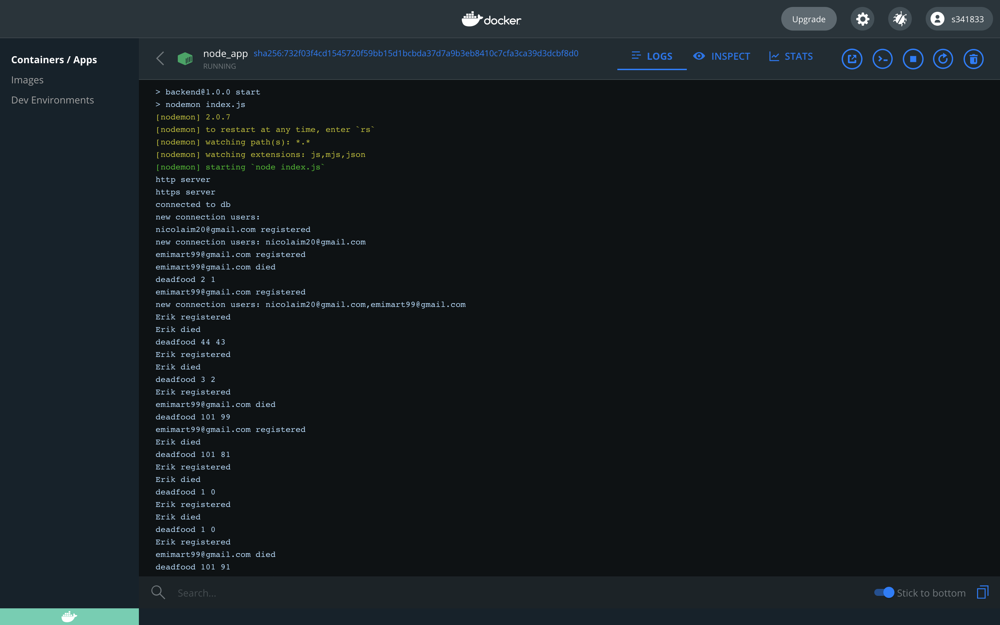
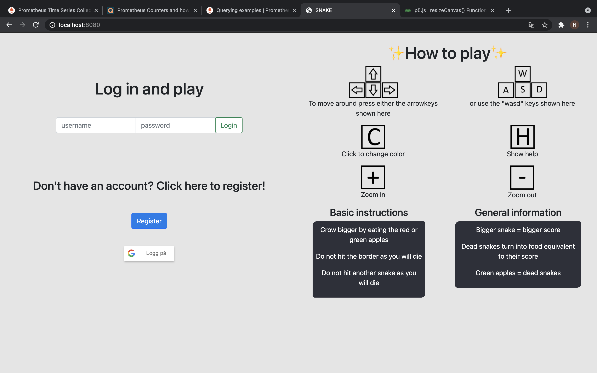
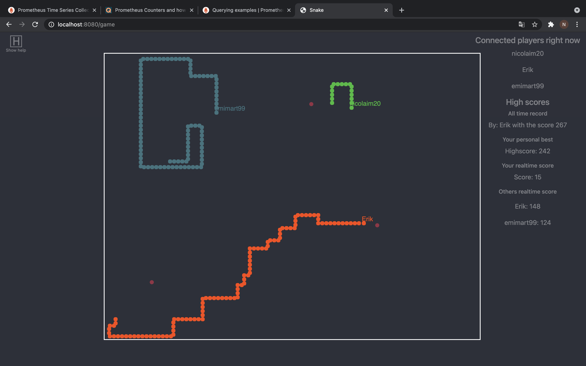
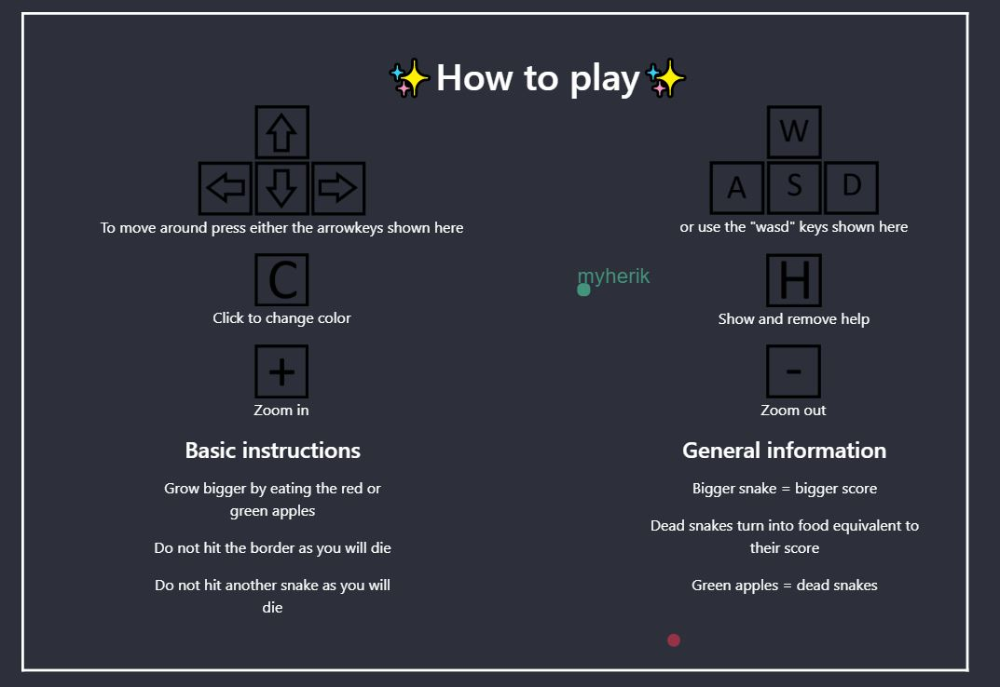
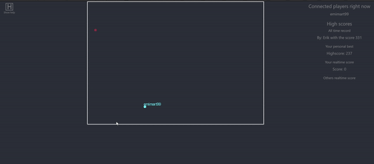
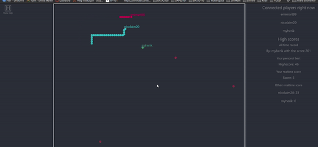

Technology chosen: Node.js backend with html/css/javascript for graphics and socket.io for networking
The first thing we had to do was obviously to set up a basic gameboard where we figured using canvas with the p5 library was the best solution. Then we pieced together every function of the game we needed one by one. The snake itself was the natural starting point. Then we added movement, food, growing and so on.
Once we had the most basic implementation of a snake game we thought it'd be nice to start adding the multiplayer functionality with websockets. We started by registering our snake to the server and for all clients to retrieve other registered snakes. In theory this makes it possible for an infinte ammount of players.
Now that we had a functioning multiplayer snake we added features that is not totally necessary but nice to have in the game. This includes dying when hitting another snake, dead snakes turning into food and scores just to mention some of them.
Now that we had completed all the expected features we started on the stretch goals. The natural first stretch goal to start with was a database to store scores on. We used mongodb to implement this. We figured creating users was also nice for having personal best scores and improving on top score whilst noone else could have that name.
Having users also made it natural to implement API so that we have a starting page for login and instructions while the game itself could be its own thing. Other stretch goals we have implemented are https with openssl (self signed certification on port 8081), google authentication, scrolling the game, allowing for 10 < players, password hashing with bcrypt and finally prometheus with grafana. Prometheus with grafana allows us to monitor any data we would like from the project.
We decided not to implement bots on purpose as we thought it would not be good for the game.
Deployment with docker is necessary. To start hosting use the following command.
docker compose up --build -d
Alternatively you could run the project in seperate docker containers with these commands
docker network create skynet
docker build -t snake-server .
docker run --network skynet --name mongodb -v $(pwd)/mongodb/data:/data/db -e MONGO_INITDB_ROOT_PASSWORD=root -e MONGO_INITDB_USERNAME=root -d mongo
docker run --network skynet --name node_app -p 8080:8080 -p 8081:8081 snake-server
docker run --network skynet --name prometheus -p 9090:9090 -v $(pwd)/Prometheus/prometheus.yml:/etc/prometheus prom/prometheus
docker run --network skynet --name grafana - 3000:3000 -v $(pwd)/Grafana:/var/lib/grafana stefanwalther/grafana
Now if you enter a browser and type in: http://localhost:8080 or alternatively for secure connection: https://localhost:8081 you should be able to get to the login page. If you enter with the https you have to approove it yourself as most browsers will not say it is a valid certification. Sign in with google is not available on google chrome with https, as google do not accept the certification. To be able to use TLS/SSL we had to sign our own certificate since we dont have a domain. We used openssl for this.
openssl genrsa -out key.pem
openssl req -new -key key.pem -out csr.pem
openssl x509 -req -days 365 -n csr.pem -signkey key.pem -out cert.pem
We have also used the OsloMet linux VM to host for testing purposes, so that we could test within the group without being on the same network. This gave us the address os13.vlab.cs.hioa.no:8081 where anyone on the internet could come in and try. This was very useful in testing the multiplayer mechanics, as we have not been able to meet in person due to the world conditions.
You will get instructions on how to play the game on the login page as well.
To start the game you have two options. You can log in with a user or through google. If you do not have a user/google account and/or do not wish to use google you can easily create a user by clicking the 'Register' button. When having clicked the register button you can fill in the input field with a username and password of your choice as long as username is not already registered in the database.
Test user is already created for testing where you can input admin as both username and password in the input fields for login.
Once logged in you are immediately placed in the game, but you are just standing still. You can start moving in any of direction by pressing either the arrowkeys or the 'WASD' keys on your keyboard. The entirety of the game is played with these keys, but there are a few additional keys available. You can press the 'C' key if you are not happy with the colour of your snake, and you'll be given another random colour. If you want the game zoomed more in or out you can press the keys '-' or '+' respectively. We also have the keypress 'H' for help.
When moving, the goal of the game is to get the highest possible score. Move towards the red or green circles and you will get bigger and get a higher score. If you hit the white walls or another snake you will die and your score will reset. You know that you have died when a large red text in the middle of the screen pops up saying "You Died!". To start over again all you have to do is to press the green button that also showed up when you died. If you die or disconnect (by for example closing the browser) your score will be saved if it beats your previous score. If your score is higher than any other players score then it will show under "All time high score".
If you get outside of the board during the shrinking process, you are able to get inside the board without getting killed. Once you have entered the new gameboard, moving outside will get you killed.
Starting the program and easily start playing alone with no one else connected
Moving the snake around the board using the keyboard
Dead players turning into food
Game tells you what keys to use so that you do not have to refer to documentation
Running into walls and other players will kill you
Very clear indication of death
Scrolling is automatic when no outer wall is visible
A clear list of connected players
Snake grows by running into "food"
Points given for getting bigger and ammount of points are clearly visible
Secure all communication with TLS (https with openssl)
Prometheus and Grafana is used to monitor usage, and is running in the node backend container, to eliminate usage from other running applications
Allowed for 10 < players or unlimited players.adding
(Follow up from previous goal) Scrolling is implemented due to large ammount of players are a possibility. The game board revolves around your snake and not the snake just moving around in the game board
Persistent high score list with a database backend (mongodb)
docker logs -f node_app








We decided on not having any bots
We did not find any easy way to implement this in JS, and since the rest of the project is done in JS we found it unnatural to try. Additionally the program is very resource demanding, so running bots on the same machine would not be a good idea.
Why we chose mongodb as our database
We had only used SQL database before, so we figured it would be nice to try something different. Mongodb also stores data as JSON files which means that the variables and values in the database have the same structure. This makes the transition to and from the database easy. It is also the most used database with node.js framework
Why we chose node.js backend and socket.io for networking
We all have had some experience with javascript before, and we also thought that a snake game fits best being web based. This made it the most natural choice for us.
Why use p5.js for graphics rendering
Some of us have used p5 before and knew this was a very useful tool for making the graphics work. With this framework you get all the core functionality and tools for you to make the game as you wish. You just have to make the choices and implementation yourself.
Why use docker compose
Since we have multiple applications that are dependent on each other, we needed a way for them to communicate and work together. This can be done with normal docker commands, however doing it with a well configured docker compose file you can start the entire project seamlessly.
Why our backend server is serving our frontend application
In the beginning of the development we faced problems when backend and frontend where running different applications because CORS stopped networking. To avoid this problem we made our backend application serve our frontend as well.
Why have prometheus node exporter running inside of the backend docker container
This allows us to only monitor the computer usage that comes from the game. This means that if other applications are running the on the same computer it will not dillute the data.